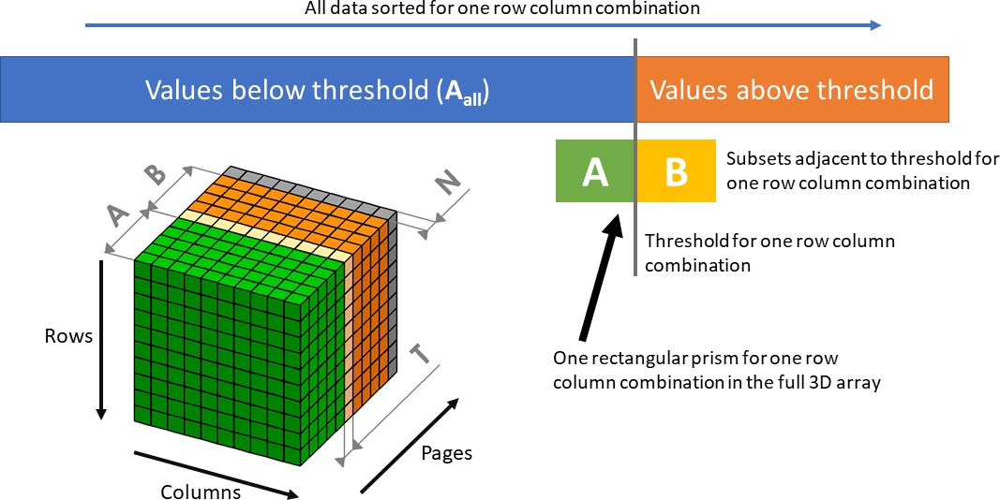
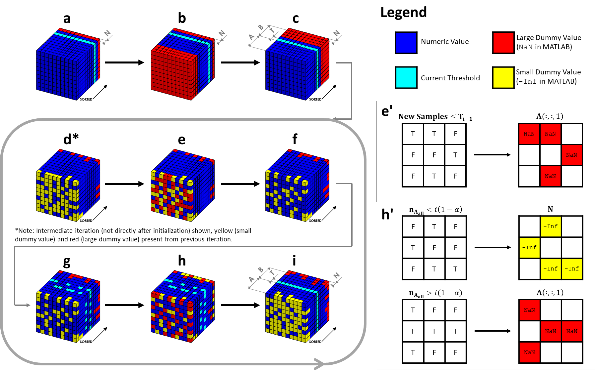
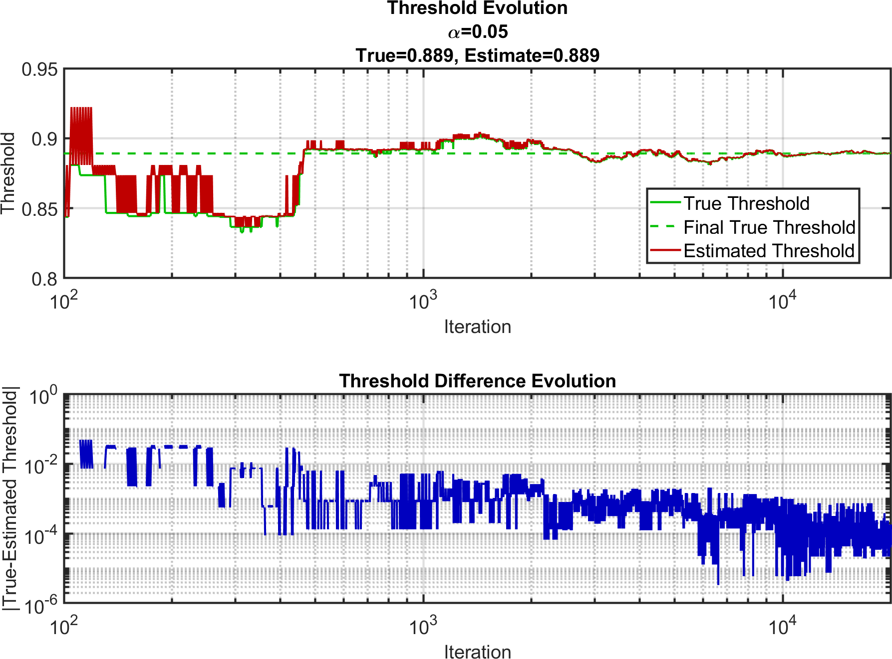
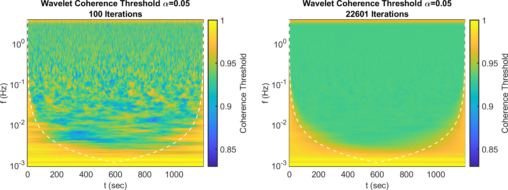

Test for Significant Coherence
Test for Significant Coherence
Applications for a Significant Coherence Test
In we developed a method to determine whether or not a given pair of signals exhibits significant 𝔠. A quantitative assessment of the level of 𝔠 between two signals is important in many applications. Two bio-medically relevant cases are TFA of cerebral AR and CHS (Chapter [ch:CHSintro]), where the first signal is ABP and the second signal is either cerebral BF velocity in the middle cerebral artery (with trans-cranial Doppler ultrasound) or ΔO and ΔD, in the cases of TFA and CHS, respectively. To determine the time intervals and frequency bands in which the signals are significantly coherent, a 𝔠 threshold is required.
In TFA of AR, one describes AR in terms of a high-pass transfer function between ABP and BF velocity . In CHS, one measures cerebral hemodynamics (typically the cerebral ΔO and ΔD with NIRS) that are coherent with a specific physiological signal, most commonlyΔA . The goal of CHS is to translate cerebral NIRS measurements into physiologically relevant information on cerebral perfusion, including AR and cerebral BF .
Methods based on TFA rely on a high level of 𝔠 between signals considered as input and output of a linear system. A high 𝔠 between input and output signals supports the assumption of a linear, uni-variate relationship between input and output signals. However, the question of how can one efficiently determine a threshold value of significant 𝔠 for the specific signals and experimental conditions of a given measurement protocol is still open.
This key requirement of determining of time intervals and frequency bands that feature significant 𝔠 between the measured signals is just as important for CHS as for TFA. In CHS the key signals are ΔO, ΔD, ΔT, and ΔA . A difficulty arises in considering multiple coherence functions when additional physiological effects beyond ABP must be taken into account . An additional difficulty of CHS, and of any time-varying process, are non-stationary conditions, for which the identification of short-lived the coherent periods require a time resolved signal processing technique. Therefore, accounting for this non-stationary nature and to determine time periods and frequency bands of significant 𝔠, a 𝔠 threshold must be found for each time-frequency point.
The Coherence Threshold Time-Frequency Map
The work in focused on an algorithm for the determination of this 𝔠 threshold for use in non-stationary TFA, CHS, and similar techniques. This threshold of significant 𝔠 can be found using multiple samples of surrogate data to generate a distribution of 𝔠. Then the percentile of the distribution can be used as the threshold corresponding to a significance level. However, storing the entire 𝔠 distribution uses a large amount of RAM. To address this problem, we have developed an algorithm to determine the 𝔠 threshold with little RAM. In-fact, a sub-field of data streaming algorithms is devoted to finding quantiles using little RAM.
In non-stationary TFA and CHS, we is interested in identifying time intervals and frequency bands that feature significant 𝔠 and then analyzing the phase and gain relationships of these 𝔠 signals. While various signal processing methods can be used, this work will focus on wavelet analysis. Using the analytic Morlet mother wavelet, the wavelet 𝔠 scalogram and wavelet transfer function scalogram are found for pairs of signals. The wavelet 𝔠 calculated from experimental data (Appendix [app:detCoh]) is compared against a threshold of 𝔠 (obtained from surrogate data) to determine times and frequencies of significant 𝔠, and then only those regions in the time-frequency space are analyzed (Appendix [app:phasors]). This workflow relies on the predetermination of a 𝔠 threshold map in time-frequency space. Such 𝔠 thresholds are obtained by generating multiple 100–10000 surrogate data signals with GRN to create a distribution of 𝔠 . The 95th percentile corresponding to a significance level \(\alpha=0.05\) of these distributions is then taken as the 𝔠 threshold. However, some studies in the literature used a higher number of iterations to find a single 𝔠 threshold that was then applied to the entire time-frequency space or as a function of frequency but not time . Additionally, cases with large amount or surrogate data (approximately 10000) limited their sample length to 512 . In principle, each time-frequency point should have its own 𝔠 threshold since the 𝔠 distribution changes with frequency and proximity to the temporal edges of the time-frequency map. This process of finding 𝔠 thresholds for each pixel can be very expensive in terms of RAM usage due to the requirement to store the entire distribution of 𝔠 values.
Methods for Creating the Coherence Threshold Map
The problem of determining the desired percentile of a large distribution of data with limited RAM can be classified as a streaming problem, for which a variety of techniques has been proposed . The goal of this work is not to devise a conceptually novel streaming algorithm, but rather to develop an efficient method suited for the specific needs of TFA and CHS to determine a wavelet coherence threshold from GRN surrogate data. We describe an approach to determine wavelet 𝔠 thresholds with little RAM usage. The algorithm is tailored to the MATLAB and takes advantage of the native matrix operations since the desired result is a map (2D array) of thresholds in the time-frequency space.
One method for estimating thresholds of significant coherence in signal analysis is the random surrogate data method , which has been applied to TFA of AR and CHS . In this method, GRNs are used to populate two signals in time. These random time signals are then analyzed with whatever coherence analysis is desired, and the 𝔠 of the GRN signals found. GRN signals are generated over many iterations (typically 100) to create a distribution of 𝔠 values for these surrogate data . There have been cases where large numbers of iterations have been reported of 15000, but this was done for a single threshold value and not a map . Other methods exist such as scrambling a real signal either in TD or FD ; however, all surrogate data methods result in distributions of 𝔠. Although 100 iterations have been used in the past, 1000–10000 or greater iterations are desirable for more accurate threshold estimates since threshold maps show heterogeneity when too few iterations are performed. An example of this heterogeneity will be shown in the subsequent sections. A threshold of significance is defined as a given percentile of the coherence distribution for surrogate data, with the 95th percentile being a typical choice (\(\alpha=0.05\)).
Simple Threshold Determination
The simplest method for determination of the desired threshold corresponding to a given percentile involves storing the entire 𝔠 distribution in RAM over the multiple iterations of GRN signals. Once all 𝔠 values in the distribution have been populated, the values are sorted and the one corresponding to the desired percentile accessed. The main disadvantage of this method is the need for large amounts of RAM. Since many signal processing techniques create time-frequency maps of coherence, each iteration will create a 2D array (rows and columns representing time and frequency, respectively) of 𝔠 values. This means that the distribution of 𝔠 values will be stored in a 3D array (rows by columns by pages) with the samples indexed along the page dimension. In an example where we have a time signal made of 10000 points and the signal analysis method will produce 200 frequencies (reasonable for wavelet analysis), we will have a 10000 × 200 array of type double (8) where \(n_{samp}\) is the number of surrogate data samples. For typical values of \(n_{samp}\), one requires 1.6 of RAM for this one variable. However, if we consider more desirable values for \(n_{samp}\) of 1000–10000 we find the need for 16 –160 of RAM, matching or exceeding the full capacity of memory of most desktop computers at the time of this work. This large RAM requirement likely has led to either few iterations being chosen or a single threshold (instead of a map) being estimated . Therefore, this simple method of threshold determination is not practical when a threshold map is desired.
Memory Efficient Algorithm for Coherence Threshold Determination

Note 1: This chart can be found as Figure 1 in .

NaN in MathWorks MATrix LABoratory (MATLAB)). c) \(\mathbf{ABN}\) is sorted, and the
thresholds are set in the correct page, \(\mathbf{T}\). [(d-f) Adding Samples] d)
2-dimensional (2D) array of new coherence
samples is placed in \(\mathbf{N}\)
replacing what was there. Then the \(\mathbf{ABN}\) is sorted. Note that the
figure does not show an example of first iteration, thus various dummy
values are already present. e) For row and columns combinations where
the new element was less than or equal to the last threshold estimate,
the first page of the array is set to the large dummy value. f) Array is
sorted. [(g-i) Shifting Elements] g) Based on the value of the new
samples it is calculated whether they belonged to the \(\mathbf{A}\) set or the \(\mathbf{B}\) set and whether the sets are
the right size for the desired threshold to be at their boundary. Now it
can be seen that the current threshold estimate is scattered in the page
dimension and the pages must be shifted for each row and column
combination. h) For row and column combinations for which set \(\mathbf{A}\) is now too large, a large
dummy value is placed in the first page of the array. For cases where
the \(\mathbf{A}\) set is now too
small, a small dummy value (-Inf in MATLAB) is placed in the last
page of the array. i) Again, \(\mathbf{ABN}\) is sorted setting the
thresholds to be in the correct page, \(\mathbf{T}\).Note 1: This is found as Figure 2 in .
Note 2: The full algorithm is shown in Listing [lst:threhAlg].
Note 3: \(\mathbf{A}\): Set below threshold; \(\mathbf{B}\): Set above threshold; \(\mathbf{T}\): Page corresponding to threshold estimate; \(\mathbf{N}\): Extra null page. Blue: Number; Light Blue: Number belonging to threshold estimate; Yellow: Lower dummy value (
-Inf in MATLAB), Red: Upper dummy
value (NaN in MATLAB).Summary of Memory Efficient Algorithm
"
Here we present a method to estimate the \(\left(\left(1-\alpha\right)\times100\right)\)th percentile and associated coherence threshold without having to store the entire coherence distribution in RAM (Listing [lst:threhAlg]) as in . The algorithm is summarized below and will be described in detail in the following sections. Additionally, whenever a 𝔠 value is retrieved that methods in Appendix [app:detCoh] are used. To estimate the desired percentile with less RAM, we start with an initial step that requires building the 𝔠 distribution for several surrogate data samples (\(2m_{kp}\approx100\)) that is much smaller than the desired value of \(n_{samp}\) 1000–10000 or greater) but similar to the lesser number of sample iterations used in the past . Throughout each iterative step of the proposed algorithm, which processes a new sample of the 𝔠 distribution, the approach is to retain only 𝔠 values that are close to the current threshold estimate (Figure 1.1). For this purpose, a 3D array \(\mathbf{ABN}\) (time by frequency by surrogate sample index; "AB" in Listing [lst:threhAlg]) is built. The notations \(\mathbf{ABN}\) follows from the fact that this 3D array is made of three sub-arrays \(\mathbf{A}\), \(\mathbf{B}\), and \(\mathbf{N}\); however, these sub-arrays are never separated in RAM and always stored as the combination \(\mathbf{ABN}\). \(\mathbf{ABN}\) consists of a total \(2m_{kp}+1\) (\(2m_{kp}\) is "Nkp" in Listing [lst:threhAlg]) pages, where each page is a 2D time-frequency array: the first \(m_{kp}\) pages contain coherence values below the desired percentile (3D subarray \(\mathbf{A}\)); the next \(m_{kp}\) pages contain 𝔠 values above the desired percentile (3D sub-array \(\mathbf{B}\); the last page is used in the algorithm to accept a new 𝔠 sample in each iteration (2D array \(\mathbf{N}\)). The first page of \(\mathbf{B}\) is named \(\mathbf{T}\) ("cohThresh" in Listing [lst:threhAlg]), which is a 2D array containing the 𝔠 threshold estimates for each time and frequency. First, the algorithm initializes the first \(2m_{kp}\) pages \(\mathbf{AB}\) by populating them with the first \(n_f \times n_t \times 2m_{kp}\) coherence samples and, after ordering the samples along the page dimension at each time-frequency pixel, estimates the threshold (Figure 1.2(a-c) and Listings [lst:threhAlg](101-123)). Here, \(n_f\) and \(n_t\) are the number of frequency samples and the number of time samples ("N1" and "N2" in Listing [lst:threhAlg]), respectively. Next, a loop is entered, where a new 𝔠 sample is taken at each iteration. In the loop, the new 2D array of coherence samples is first added to \(\mathbf{ABN}\) (in the last page, \(\mathbf{N}\) and then the elements of \(\mathbf{ABN}\) are properly shifted in the page dimension to keep the 𝔠 threshold array \(\mathbf{T}\) at the same page index. Note that during this rearrangement some 𝔠 values that were present in the \(\mathbf{ABN}\) array will be discarded and will be substituted by some elements of the new coherent sample. The method to shift the elements of \(\mathbf{ABN}\) is controlled by a 2D array, \(\mathbf{n}_{\mathbf{A}_{all}}\) ("An" in Listing [lst:threhAlg]), which contains the total number of samples (updated at each iterative step) that are below threshold at each time-frequency pixel. \(\mathbf{n}_{\mathbf{A}_{all}}\) is named such since it represents the length of the conceptual set \(\mathbf{A}_{all}\) which contains all the samples below the threshold estimate ever extracted until that step of the loop (including samples that were extracted and are no more in the array \(\mathbf{ABN}\)). In the example where a 10000 × 200 time-frequency array of thresholds is desired; each page would take 16 of RAM. For \(m=50\) (id est if \(\mathbf{A}\) and \(\mathbf{B}\) are each 50 pages deep), the 3D array \(\mathbf{ABN}\) would consist of 101 pages. This is 1.6 of RAM, reasonable for most desktop computers at the time of this work, but allowing for an arbitrary \(n_{samp}\) of 1000–10000 or greater. Notice that if we compare this amount of memory to the examples where all coherence samples were saved, the memory usage is equivalent to \(n_{samp}=100\) for all samples saved. This is the key advantage of the algorithm, namely the ability to consider an arbitrarily large number of samples with RAM usage as if \(n_{samp}=2m_{kp}+1\) and all samples were saved. Below, we describe in detail the three steps of the algorithm: initialization (Listings [lst:threhAlg](101-123)), adding samples (Listings [lst:threhAlg](125-145)), and shifting elements (Listings [lst:threhAlg](147-168)). "
Initialization
"
First, the initial \(2m_{kp}\) values of 𝔠 obtained from analyzing GRN data with Appendix [app:detCoh]. These 𝔠 values are are used to populate the first \(2m_{kp}\) pages of the \(\mathbf{ABN}\) (Listings [lst:threhAlg](101-123)). Those values are sorted in the page dimension (Figure 1.2(a) and Listing [lst:threhAlg](116)) so that \(\mathbf{T}\) is easily identified. For example, in the case of \(\mathbf{A}\) and \(\mathbf{B}\) having 50 pages each \(m_{kp}=50\) and \(\alpha=0.05\), the coherence thresholds will be at page 96 of \(\mathbf{ABN}\). Second, we shift the coherence thresholds to the first element of the \(\mathbf{B}\) sub-array (or page \(m_{kp}+1\), page 51 in this example, of the \(\mathbf{ABN}\) array); to do this, the pages with the smallest \(\lfloor m_{kp}\left(1-2\alpha\right)\rceil\) values in the \(\mathbf{A}\) sub-array (id est in the first 45 pages in this example with \(m_{kp}=50\) and \(\alpha=0.05\) are redefined to the large dummy value (in the case of MATLAB implementation, "NaN") (Figure 1.2(b) and Listing [lst:threhAlg](117)). Third, the \(\mathbf{ABN}\) array is again sorted in the page dimension, thus placing the page \(\mathbf{T}\) at the first page of the \(\mathbf{B}\) sub-array (Figure 1.2(c) and Listing [lst:threhAlg](118)), or at page 51 of the \(\mathbf{ABN}\) array. At this stage, the 3D array \(\mathbf{ABN}\) has the first \(m_{kp}=50\) pages with 𝔠 values under threshold (\(\mathbf{A}\) array), the 5 following pages (the first 5 pages of \(\mathbf{B}\)) with 𝔠 value equal or above threshold (first page of \(\mathbf{B}\)), and all the remaining pages of the \(\mathbf{B}\) and \(\mathbf{N}\) sub-arrays are filled with the large dummy value ("NaN" in MATLAB). \(\mathbf{T}\) is accessed to obtain the current coherence threshold estimates (Listing [lst:threhAlg](122)). A 2D array is created (\(\mathbf{n}_{\mathbf{A}_{all}}\); "nA" in Listing [lst:threhAlg](118)) where each element contains the number of samples below the threshold estimate for each time-frequency pixel. Per the \(\left(\left(1-\alpha\right)\times100\right)\)th percentile, all elements of this array are initialized to the same value (\(\left(\left(1-\alpha\right)\times100\right)=95\) in this example). Because of this initialization, most of the \(\mathbf{B}\) array is set to the large dummy value and the values in the \(\mathbf{ABN}\) array are sorted in the page dimension. "
Adding Samples
"
The first step taken during each iteration of the threshold updating loop is to obtain a new 2D array of coherence value samples from GRN’s input into the Appendix [app:detCoh] methods. This 2D array fills the last page, \(\mathbf{N}\), of the \(\mathbf{ABN}\) array (Figure 1.1), replacing its current values (Listing [lst:threhAlg](128)). For each row and column combination, if the new 𝔠 sample is below the current threshold estimate, \(\mathbf{n}_{\mathbf{A}_{all}}\) is incremented by one; otherwise \(\mathbf{n}_{\mathbf{A}_{all}}\) is unchanged (Listing [lst:threhAlg](135-136)). Then the \(\mathbf{ABN}\) array is sorted in the page dimension (Figure 1.2(d) and Listing [lst:threhAlg](137)), moving the new 𝔠 samples into \(\mathbf{A}\) if they are below the threshold estimate, or into \(\mathbf{B}\) if they are above the threshold estimate. As a result, one may end up with some 𝔠 values below the current threshold estimate that are in \(\mathbf{B}\) (this happens if there is at least one element in \(\mathbf{N}\) below threshold). To shift these elements into \(\mathbf{A}\) (where they belong), we set the corresponding elements of the first page of \(\mathbf{ABN}\) to the large dummy value ("NaN" in MATLAB; Figure 1.2(e) and Listing [lst:threhAlg](142-145)). After re-sorting the array \(\mathbf{ABN}\), all the elements of \(\mathbf{ABN}\) below the threshold estimate will be in \(\mathbf{A}\). "
Shifting Elements
"
The second step taken during each iteration loop is to determine the new threshold estimate. This step is based on a comparison between the current values in each row and column combination of \(\mathbf{n}_{\mathbf{A}_{all}}\) and the expected value of \(i(1-\alpha)\) ("(1-alpha)*n" in Listing [lst:threhAlg](152-153)) where \(i\) is the iteration number ("n" in Listing [lst:threhAlg]) including the \(2m_{kp}\) initialization samplings. This is because the initialization of the algorithm is considered to take \(2m_{kp}\) iterations so that the iteration number \(i\) is representative of the total number of samples taken thus far. We describe the performed comparisons following MATLAB notation where arrays can be compared to scalars resulting in Boolean arrays: if \(\mathbf{n}_{\mathbf{A}_{all}}<i\left(1-\alpha\right)\) ("An<((1-alpha)*n)" in Listing [lst:threhAlg](152)), elements must be taken from \(\mathbf{B}\) and added to \(\mathbf{A}\) (at those time-frequency pixels of the Boolean array where there is a "true"); if \(\mathbf{n}_{\mathbf{A}_{all}}>i\left(1-\alpha\right)\) ("An>((1-alpha)*n)" in Listing [lst:threhAlg](153)), (this statement generates an almost complementary Boolean array to the previous one) an element must be taken from \(\mathbf{A}\) and added to \(\mathbf{B}\); no action is needed if \(\mathbf{n}_{\mathbf{A}_{\mathbf{\text{all}}}} = i\left( 1 - \alpha \right)\). Thus, the row and column combinations that require their elements shifted are found (Figure 1.2(g)). In cases where pixels must be shifted to lower-index pages (from \(\mathbf{B}\) to \(\mathbf{A}\)), a large dummy value replaces the first page of \(\mathbf{ABN}\) (Listing [lst:threhAlg](162)). In cases where pixels must be shifted to larger-index pages (from \(\mathbf{A}\) to \(\mathbf{B}\)), a small dummy value (in the case of MATLAB implementation, "-Inf") replaces the last page of \(\mathbf{ABN}\) (Figure 1.2(h) and Listing [lst:threhAlg](164)). \(\mathbf{n}_{\mathbf{A}_{all}}\) values are incremented by one if a sample was moved from \(\mathbf{B}\) to \(\mathbf{A}\), and decremented by one in the opposite case. Finally, the \(\mathbf{ABN}\) array is sorted for the last time placing the updated threshold estimates at the \(\mathbf{T}\) page, the first page of the \(\mathbf{B}\) array (Listing [lst:threhAlg](168)). The \(\mathbf{T}\) page is accessed to extract the new threshold estimate (Listing [lst:threhAlg](172)). Because of this step, the \(\mathbf{ABN}\) array is sorted, \(\mathbf{n}_{\mathbf{A}_{all}}\) and \(\mathbf{T}\) are updated, and the \(\mathbf{ABN}\) array is ready for the new loop iteration. "
Testing the Memory Efficient Algorithm
Testing with Constructed Distributions

Note 1: This chart can be found as Figure 3 in .
To validate the results of the algorithm, its output was compared to the true percentile given by a data set consisting of 20000 samples. The test set was not a 𝔠 distribution, but rather a constructed distribution. In addition, this test was carried out for one threshold value, equivalent to one pixel in a real 𝔠 map. In this example, we take \(m_{kp}=50\) to be consistent with the previous sections. The test data resulted from two random Gaussian distributions, one with mean 0 and standard deviation 0.2, and the other with mean 0.5 and standard deviation 0.5. Each of the 20000 samples had an equal likelihood of coming from either of the Gaussian distributions. The test values of these distributions were limited to the range 0–1 inclusive. The purpose of creating this test data set was to create a bag of numbers to test the algorithm against, any bag of numbers constructed in various ways could have been used.
The algorithm was run pulling samples from this test data set to construct its estimate of the 95th percentile. All the samples from the distribution were saved, and the true 95th percentile for all the data samples pulled thus far was calculated for each iteration of the loop. The algorithm was run for all \(n_{samp}=20000\) samples and did not show a difference from the true 95th percentile within the third significant digit (Figure 1.3). The true final percentile value was determined by finding the 95th percentile from the whole sample distribution.
Application of Wavelet Coherence Analysis

wcoherence
function, modified to remove smoothing in frequency (see Appendix [app:detCoh]). Left) Thresholds
generated form 100 iterations using the entire 𝔠
distribution (initialization of the algorithm). Right) Thresholds
generated using the algorithm in 24 h with 22601 iterations on a typical
desktop computer at the time of this work.Note 1: This chart can be found as Figure 4 in .
"
One intended application of this algorithm is to find thresholds for significant 𝔠 in wavelet signal analysis (Appendices [app:phasors]&[app:detCoh]). Using a map of 𝔠 thresholds, one can determine which points in frequency and time are significantly coherent for a given pair of signals. The computation of 𝔠 threshold as a function of time and frequency can be a computationally demanding task for more data samples (longer time acquisitions assuming a fixed sampling frequency). To evaluate the capabilities of the algorithm presented here, we used it to generate 𝔠 thresholds for the 𝔠 calculated by the MATLAB "wcoherence" function, which was modified to remove smoothing in frequency (Figure 1.4) which is discussed in Appendix [app:detCoh]. The threshold map presented in the right panel of Figure 1.4 was given a limit of 24 h to run the algorithm on a typical desktop computer at the time of this work. The algorithm completed 22601 iterations in that time on a 9375 × 145 map of 𝔠 1359375 individual 𝔠 thresholds). This map represented thresholds for a 20 min long signal acquired at a sample rate of 7.8125 Hz with analyzed frequencies from 0.001 Hz–3.730 Hz. The left panel of Figure 1.4 shows the initialization of the algorithm (thresholds from 100 iterations). Comparing the 100 iteration map to the 22601 iteration map, 100 iterations yield a much greater heterogeneity compared to 22601 iterations. This is representative of thresholds generated for a real experimental protocol on actual distributions of 𝔠 (instead of a single constructed distribution as in the previous section). It is worth noting that if this map was generated by storing the entire 𝔠 distributions 246 of memory would have been required, compared to the 1 used by the \(\mathbf{ABN}\) array in the algorithm. "
Discussion of the Memory Efficient Algorithm
We presented an algorithm designed to calculate threshold values of significant 𝔠. The algorithm was designed with the specific objective of calculating time-frequency maps of 𝔠 thresholds for wavelet analysis, but it could be used for any application that requires the estimation of a desired percentile of a sampled distribution. The algorithm allows the calculation of thresholds from large number of samples without requiring large amounts of computer RAM. This is because the proposed method employs only the distribution values that fall within a region around an iteratively updated threshold. With this method, the limitation in the number of samples is determined by available computing time, since the RAM that the algorithm requires does not increase as more and more samples are acquired. The algorithm will allow for the accurate estimation of 𝔠 thresholds when analyzing pairs of signals. Physiologically relevant signals include ABP and either BF or ΔO, and ΔD which are relevant for TFA of AR and CHS.
Values of the Number of Coherence Samples Taken and Kept
The main aim of the algorithm is to estimate threshold maps with large \(n_{samp}\) (iterations id est the number of samples taken) without large RAM usage. Previous works have either used small \(n_{samp}\) or not generated full threshold maps (but rather just one threshold value) . From Figures 1.3&1.4 it can be seen that 100 samples are not enough to get a good estimate of the threshold . The threshold map shown in the left panel of Figure 1.4 shows a visible heterogeneity in the time-frequency map of the threshold. This example, generated from 100 samples, shows that some regions may feature significant coherence when a more accurate threshold estimate would not. Thus, more 𝔠 samples are required (1000–10000 or greater) but, as discussed in, a simple threshold determination would require too much RAM to generate a threshold map. Thus, a single threshold estimate (not a map) with a large \(n_{samp}\) has been used . But from the right panel of Figure 1.4 the threshold map does not contain a constant value as the threshold depends on frequency and temporal proximity to the edge. Therefore, we need a method to estimate entire threshold maps using large \(n_{samp}\) but little RAM, the algorithm presented here achieves this goal.
The value chosen for \(m_{kp}\) (size of \(\mathbf{A}\) and \(\mathbf{B}\) along the page dimension id est the number of samples kept) has some effect on the algorithm. In principle, it should be set as large as possible without using too much RAM or reducing computation time. Here, \(m_{kp}=50\) was chosen since it was found to be large enough without using unreasonable amounts of RAM. \(m_{kp}\) can also be chosen to be too small. If this is the case, there is a risk of the dummy values appearing in the threshold estimate array.
Applicability of the Algorithm
A method that can easily and accurately generate threshold maps is important because a different map may be needed for different experimental protocols. Different experimental protocols may last different durations in time. The data could be collected at different sampling rates. In addition, different experiments may require different coherent analysis parameters (smoothing in wavelet for example). These differences across experimental protocols require 𝔠 maps to be generated frequently without the need for a specialized computer. The algorithm presented here is capable of this, since it does not have large memory requirements, and most desktop computers at the time of this work can be used to generate thresholds. This leads to the possibility of generating thresholds for an experiment overnight on one’s computer and then being able to complete the turnaround on coherence analysis within one day of a new experiment.
The algorithm was developed for and inspired by the need for significant 𝔠 in TFA and CHS. However, its use is not limited to these modalities. In principle it could be applied to any application that needs percentile estimates of many samples with little RAM usage. This is the sub-field of quantile estimation in the field of streaming algorithms. This work does not aim to develop a new streaming algorithm but rather to create a specific implementation that has been optimized for MATLAB and importantly for estimation of 2D arrays of percentiles. Note that this algorithm is implemented without for loops to index the arrays, but uses instead native array operations in MATLAB, an important consideration when optimizing for MATLAB. This suggests that the algorithm may to applicable to modalities outside TFA and CHS.
Finally, there is a possibility for this algorithm to be implemented in other languages. Despite it being optimized for MATLAB by using the native array operations, MATLAB has disadvantages. First, development in MATLAB requires expensive licenses making it inaccessible to some. Second, MATLAB is inherently not as fast as other languages since it is designed for data analysis and visualization, not writing and compiling standalone programs. Due to these disadvantages it may be desirable to implement the algorithm in another language. There is nothing about the algorithm that would prevent this. Array operations could be implemented in nested for loops and large positive and negative numbers could be used for the dummy values, thus lending to the possible applicability of the algorithm outside MATLAB.
Considerations and Limitations of the Algorithm
The primary problem that can arise running this algorithm is dummy values showing up in the \(\mathbf{T}\) page and ruining the estimation of the threshold. It is recommended that a check for dummy values be implemented at every iteration of the threshold estimates, and to disregard them. For these cases, either the previous iteration estimate, or the max sample value (at a time-frequency pixel where a dummy value is present in \(\mathbf{T}\)) may be used as the updated estimate. The latter is more conservative, possibly overestimating the 𝔠 threshold. Such conservative estimates are sometimes desirable in determining thresholds. In this conservative spirit, we used the first page of \(\mathbf{B}\) as the threshold instead of the average of the last page of \(\mathbf{A}\) and the first page of \(\mathbf{B}\).
It is also worth noting that three sorting operations are required for each iteration of this algorithm. Sorting operations are one of the more computationally expensive operations in terms of processing time. Considering the sort operations, the cost of the algorithm is \(\mathcal{O}\left(6 n_{samp} n_f n_t m_{kp} \log_{2}\left(2 m_{kp}\right)\right)\) since MATLAB uses quick sort on the \(2m_{kp}+1\) values in \(\mathbf{ABN}\). This sort must be repeated three times for every iteration \(n_{samp}\), frequency row \(n_f\), and time column \(n_t\). Thus, it may be said that this algorithm reduces memory cost at the expense of an increased processing cost. Parallelism may be a way to alleviate the cost of sorting; because the sort is done for row-column \(n_f\) and \(n_t\). Of course, there may be further opportunities to improve the algorithm through parallelism. However, the time-frequency analysis of the GRN signals that must be done at every iteration dominates the processing time in each step and may overshadow the cost of sorting.
The efficacy of the algorithm maybe further improved to reduce computation cost or better take advantage of parallelization. One such improvement may involve changing the way new data is added. Instead of adding one sample at a time, new data may be added in blocks of multiple surrogate data samples (like repeating the initialization step in the iterations). This may require fewer sorting operations but would be more costly in terms of RAM.
Listings
Acronyms: MathWorks MATrix LABoratory (MATLAB).
Available at:
https://github.com/DOIT-Lab/DOIT-Public/tree/master/Dissertations/GilesBlaney2022/code